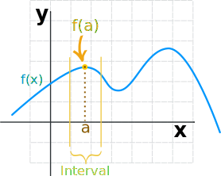
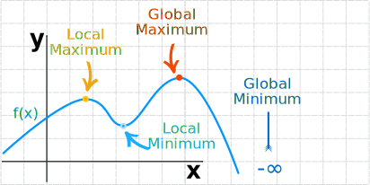

Maxima and Minima of Functions
Local Maximum and Minimum
Functions can have "hills and valleys": places where they reach a minimum or maximum value.
It may not be the minimum or maximum for the whole function, but locally it is.

We can see where they are,
but how do we define them?
Local Maximum
First we need to choose an interval:

Then we can say that a local maximum is the point where:
The height of the function at "a" is greater than (or equal to) the height anywhere else in that interval.
Or, more briefly:
f(a) ≥ f(x) for all x in the interval
In other words, there is no height greater than f(a).
Note: a should be inside the interval, not at one end or the other.
Local Minimum
Likewise, a local minimum is:
f(a) ≤ f(x) for all x in the interval
The plural of Maximum is Maxima
The plural of Minimum is Minima
Maxima and Minima are collectively called Extrema
Global (or Absolute) Maximum and Minimum
The maximum or minimum over the entire function is called an "Absolute" or "Global" maximum or minimum.
There is only one global maximum (and one global minimum) but there can be more than one local maximum or minimum.

Assuming this function continues downwards to left or right:
- The Global Maximum is about 3.7
- The Global Minimum is −Infinity
Calculus
Calculus can be used to find the exact maximum and minimum using derivatives.